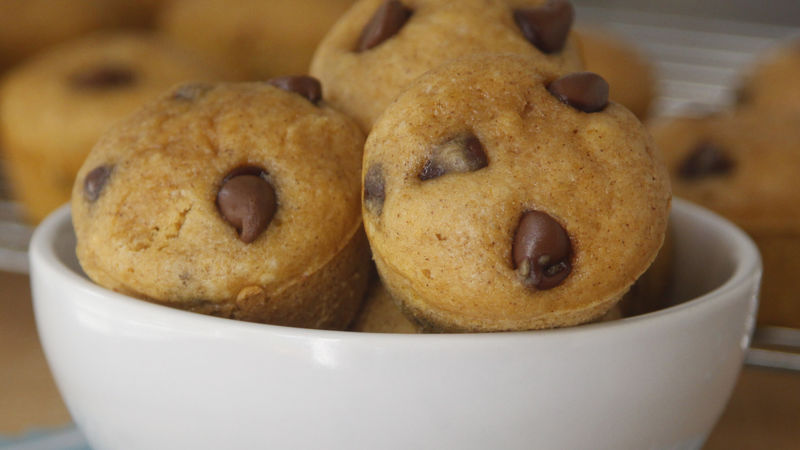

Pumpkin Muffins

Description
These tiny muffins are a flavor-packed marvel. Starting with Original Bisquick mix, they add pumpkin and chocolate chips, making a rich and satisfying combination.
Ingredients
- 1cup Original Bisquick™ mix
- 1/4 cup sugar
- 1 teaspoon pumpkin pie spice
- 1 egg, beaten
- 1/4 cup milk
- 1/4 cup canned pumpkin (not pumpkin pie mix)
- 1/4 cup semisweet chocolate chips
Steps
- Heat oven to 350°F. Spray 16 mini muffin cups with cooking spray.
- In medium bowl, stir together Bisquick mix, sugar, pumpkin pie spice, egg, milk and pumpkin until blended. Stir in chocolate chips. Divide batter evenly among muffin cups, filling each two-thirds full.
- Bake about 10 minutes or until golden brown and tops spring back when lightly touched. Cool 5 minutes; remove from pan to cooling rack. Serve warm or cool.